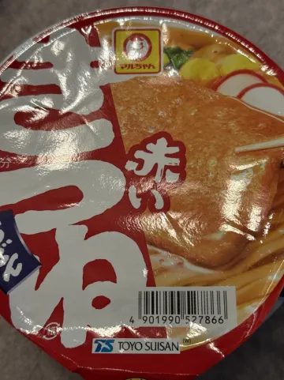
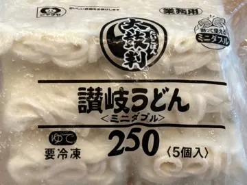
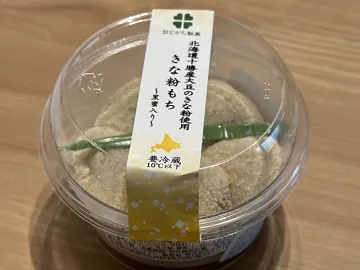
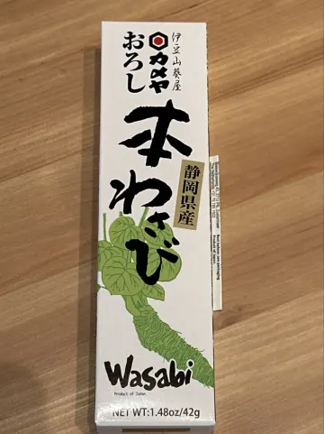
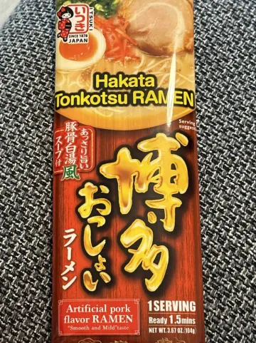

ヘルシンキの日本食材店：日本の食品が買えるお店
フィンランドで日本食を作るのは、以前よりずっと簡単になりました。お米、味噌、海苔、キユーピーマヨネーズもトラムで行ける距離で手に入ります。難しいのは、たくさんの輸入品の中からどれが本当に美味しいかを見極めることです。
ヘルシンキで日本の食材が買えるお店

- 日本食材の専門店。Savory Scoresで最も評価が多いのはTokyokanとHACHI Japanin Markkinat。インスタント麺、冷凍うどん、和菓子、本わさび、昆布や鰹節など、見つけにくい日本のブランド品が揃います。
- アジア系スーパー。JK Shop（日本・韓国食材）、RF Asian Market、East Asia Martでは、中国や韓国の食品と並んで日本のお米、麺、調味料、お菓子が買えます。
- 一般のスーパー。K-Citymarket、Prisma、大きめのS-Marketには世界の食品コーナーがあり、寿司米、醤油、海苔、わさびなどがあります。
日本の台所、基本の食材リスト
- 日本の短粒米（ジャポニカ米）
- 醤油、みりん、米酢、料理酒
- 味噌と出汁（顆粒、または昆布＋鰹節）
- 海苔、ふりかけ、ごま
- カレールー、パン粉、キユーピーマヨネーズ
- うどん、そば、ラーメンの麺
Savory Scoresのデータより
ヘルシンキで評価の高い日本食材店
| 順位 | 写真 | お店 | 平均スコア | 平均本格的さ | 最終評価 |
|---|---|---|---|---|---|
| 1 | Tokyokan | 7.7 | 9.6 | 2026年3月 | |
| 2 | HACHI Japanin Markkinat | 7.3 | – | 2026年2月 |
2026年10月時点、ヘルシンキ周辺の12店舗における日本の食品の評価58件に基づいています（評価が5件以上のお店のみ）。スコアと本格的さは10点満点の平均値です。ほとんどの料理はまだ評価が1〜2件で、メニューも変わるため、最新のランキングはアプリで確認してください。このリストに載るべきお店で食べましたか？Savory Scoresで評価しましょう。
Savory Scoresのデータより
ヘルシンキで評価の高い日本の食品
| 写真 | 商品 | お店 | スコア | 本格的さ | 最終評価 |
|---|---|---|---|---|---|
| 日清 UFO焼きそば | HACHI Japanin Markkinat | 10 | – | 2026年2月 | |
| マルちゃん 緑のたぬき天そば | Tokyokan | 10 | 10 | 2025年12月 | |
 | マルちゃん 赤いきつねうどん | Tokyokan | 10 | – | 2025年11月 |
 | Simadaya Frozen sanuki udon | Tokyokan | 10 | 10 | 2025年8月 |
| Mini-Taiyaki | Tokyokan | 10 | 10 | 2024年12月 | |
 | Tokachi seika kinako mochi | Tokyokan | 10 | – | 2024年10月 |
 | カメヤ おろし本わさび | HACHI Japanin Markkinat | 10 | – | 2024年8月 |
 | Itsuki Hakata Osshoi Tonkotsu ramen | Tokyokan | 10 | 8 | 2024年6月 |
2026年10月時点、ヘルシンキ周辺の12店舗における評価58件に基づいています。スコアと本格的さは10点満点の平均値です。ほとんどの料理はまだ評価が1〜2件で、メニューも変わるため、最新のランキングはアプリで確認してください。このリストに載るべきお店で食べましたか？Savory Scoresで評価しましょう。
Savory Scoresでお店の日本食品を評価する方法
Savory Scoresはレストランだけのアプリではありません。「お買い物」タブでは、おにぎり、お弁当、冷凍餃子、インスタントラーメン、調味料、お菓子なども同じように評価できます。
- 「お買い物」タブを開いて、おにぎりや餃子などの商品カテゴリーを検索。
- みんなの評価をチェック。どのお店のおにぎりがまた買いたいと思われていて、どれがいまいちか。
- 試したものを評価。いいえ、多分、はい。がっかりしたインスタントラーメンを二度買うことはもうありません。
- 商品を保存して、お気に入りの日本食品の買い物リストに。
たまには外で食べたいときは、ヘルシンキの日本食レストランをどうぞ。
ヘルシンキでお気に入りの一皿を見つけよう。 Savory ScoresはiPhone・iPad向けの無料アプリ。料理を検索して街中のお店を比べ、ワンタップで評価できます。